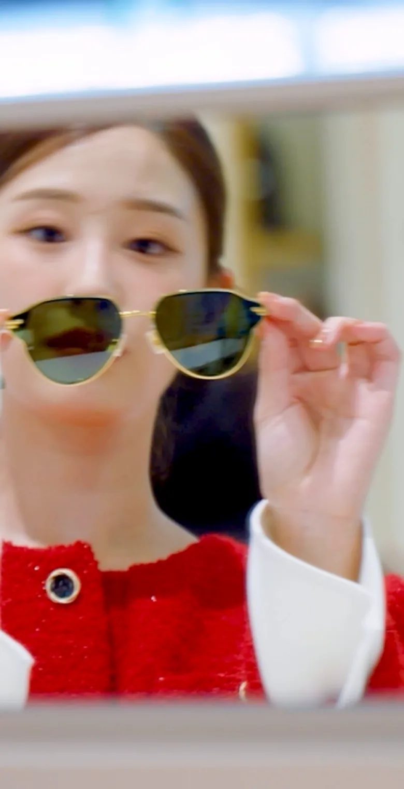
Shinsegae Duty Free
Content Production
From Vision to Visual
2025년부터 2026년까지
인천국제공항 면세점을 배경으로
브랜드 영상을 제작하고,
안무가 KYOKA의 캠페인 비주얼
리터칭을 맡았습니다.
촬영 기획부터 현장 프로덕션,
후반 작업까지 콘텐츠마다
목적에 맞는 비주얼을 완성했습니다.From 2025 to 2026, we produced
brand films set in the duty-free
stores of Incheon Airport
and
retouched the campaign visuals
featuring choreographer KYOKA.
From shoot planning
to on-set
production and post-production,
each piece was crafted
for its own purpose.
신세계면세점 만의 경험은
어떻게 시작될까?The Shinsegae Duty Free Experience
신세계면세점이 전하고자 하는 브랜드 경험을
하나의 흐름으로 담기 위해
실제 고객의 동선을 따라
촬영을 계획했습니다. 공간을 둘러보고,
브랜드를 발견하고,
제품을 경험하는 순간을 한 편의 시퀀스로 담았습니다.To show Shinsegae Duty Free’s brand experience as one continuous flow,
we planned the shoot around the real paths customers take. Exploring the space,
discovering brands, and trying products all unfold in a single sequence.
Following the Journey
실제 이동 흐름을 따라 주요 브랜드와 제품을 차례로 담았습니다.
공간의 분위기와 쇼핑의 리듬을 하나의 장면으로 이어,
신세계면세점만의 경험이 자연스럽게 전해지도록 구성했습니다.Following the way customers actually move, we captured key brands and products in turn.
The atmosphere of the space and the rhythm of shopping are woven into one scene,
letting the Shinsegae Duty Free experience come through naturally.
일상과 여행 사이, 가장 설레는 시간.
우아하고 당당한 두 모델로
신세계면세점의 순간을 담았습니다.Between everyday life and travel,
the most exciting moment.
Two elegant, confident models
capture Shinsegae Duty Free.
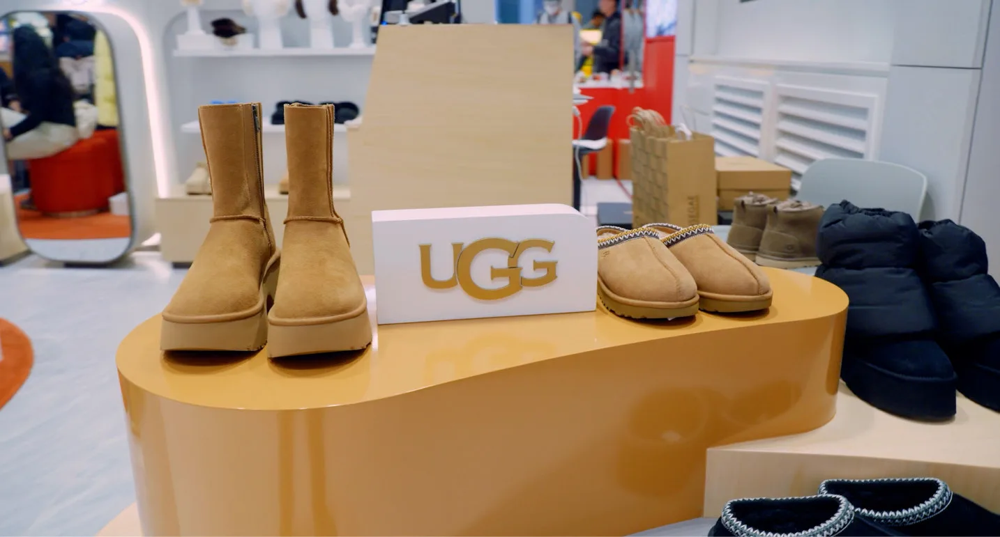
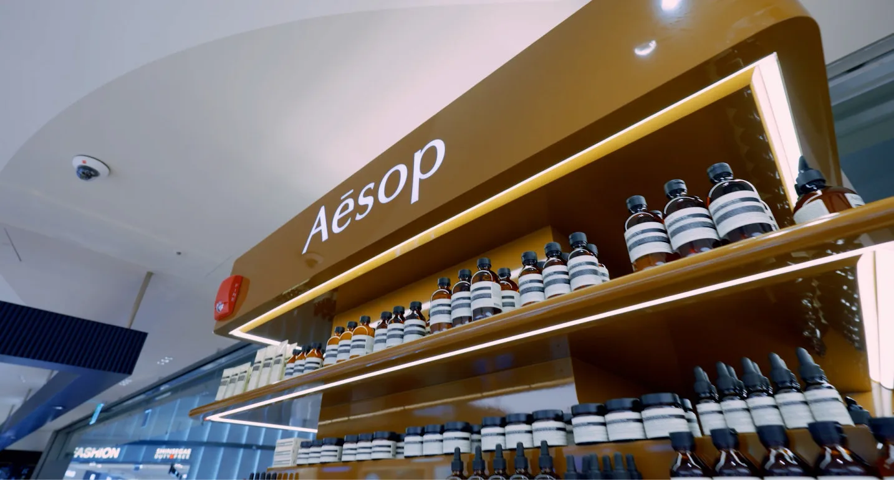
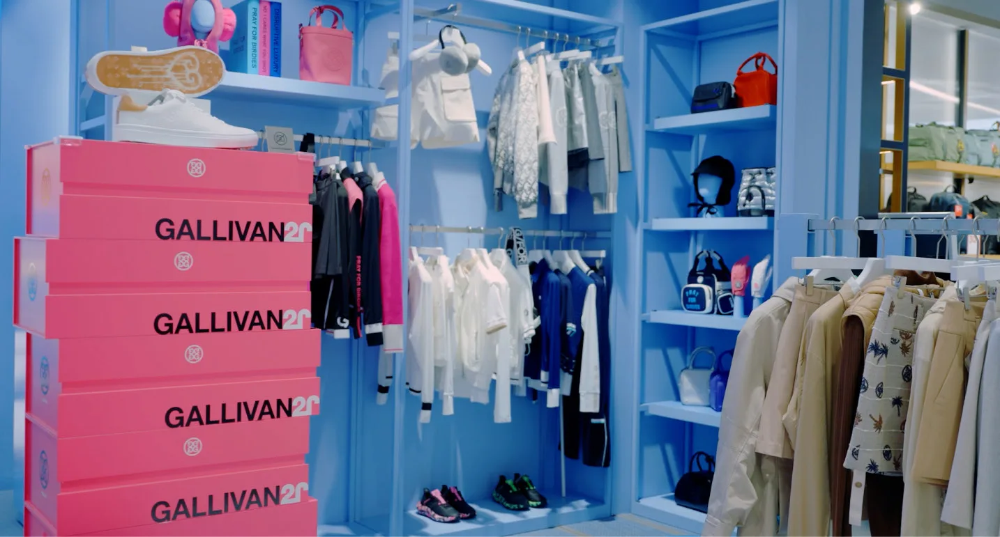
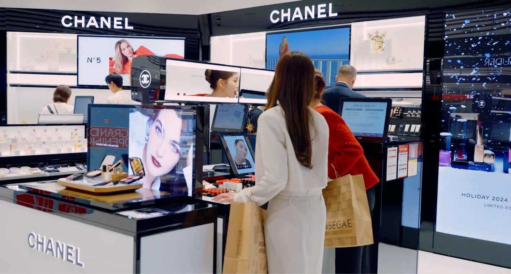
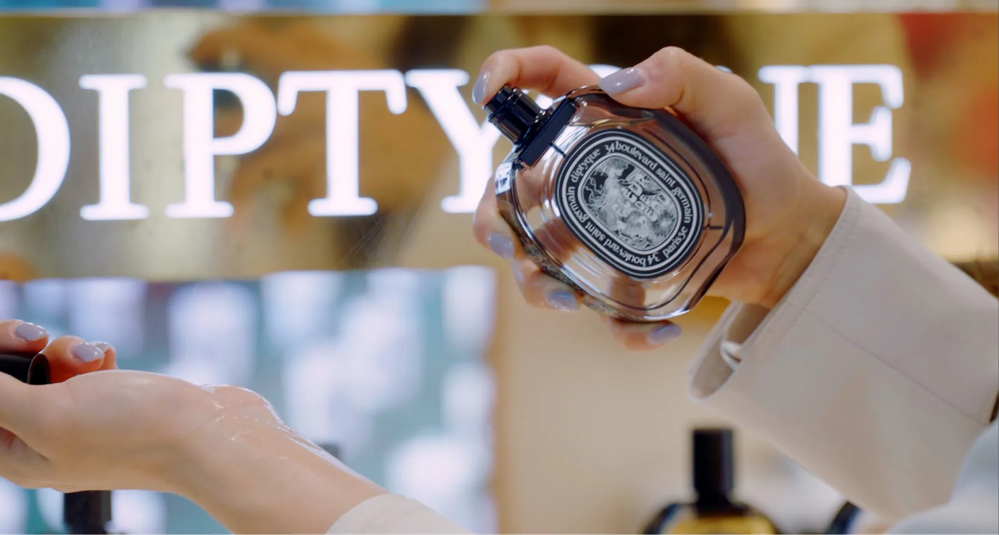
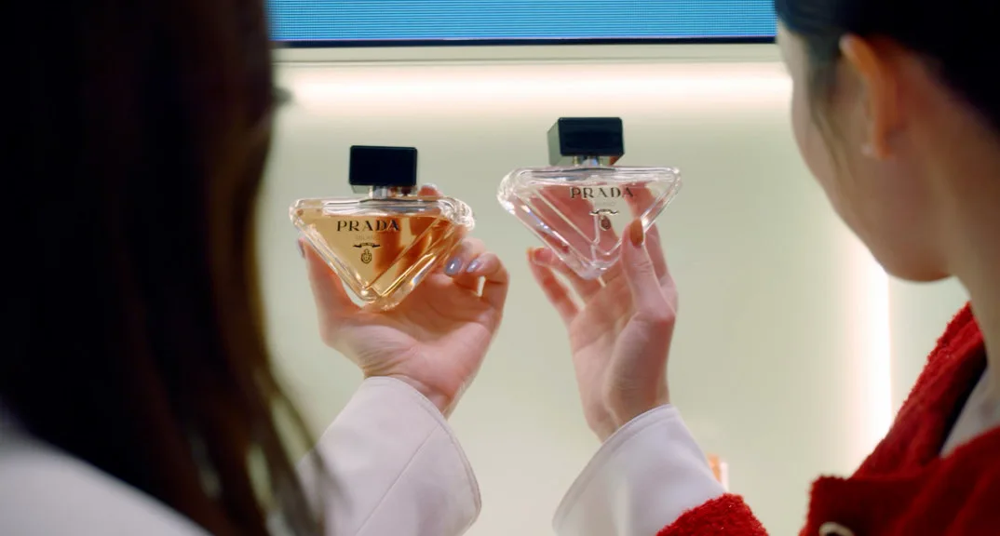
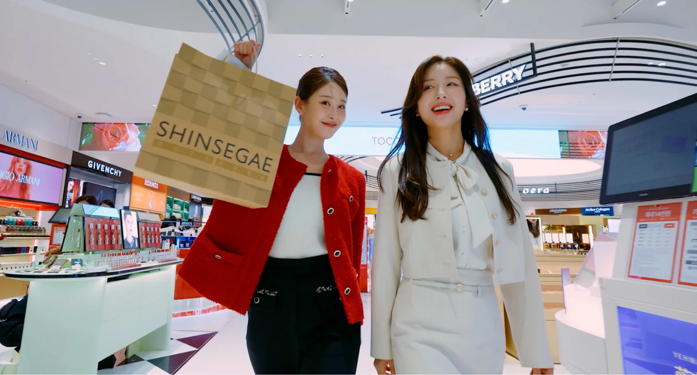
Watch the Full Film
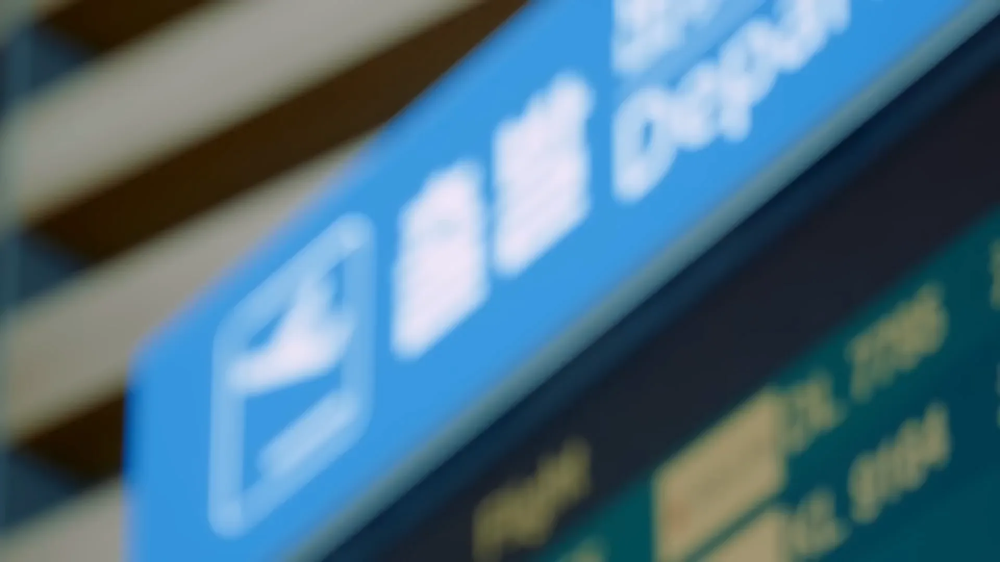
캠페인 비주얼의 완성도는
어디에서 결정될까?The Details Behind Campaign Visuals
완성도는 쉽게 눈에 띄지 않는 작은 디테일에서 결정됩니다.
피부 질감과 표정, 컬러 밸런스를 한 장 한 장 세심하게 다듬어,
촬영 원본의 무드는 살리고 브랜드 아이덴티티는 선명하게
드러냈습니다.It comes down to details most people never notice.
Refining skin texture, expressions, and color balance image by image,
we kept the mood of the original shoot and sharpened the brand’s identity.
Refining Every Detail
안무가 KYOKA의 캠페인 이미지를 브랜드가 전달하고자 하는 분위기에 맞춰 리터칭했습니다.
인물의 자연스러운 표정과 피부 표현, 컬러 밸런스를 세심하게 보정하여 촬영 원본의 무드를 유지하면서도
브랜드의
아이덴티티가 더욱 선명하게 드러날 수 있도록 완성했습니다.We retouched choreographer KYOKA’s campaign images to match the brand’s intended mood.
Carefully refining natural expressions, skin texture, and color balance,
we kept the feel of the original shoot and brought the brand’s identity into sharper focus.
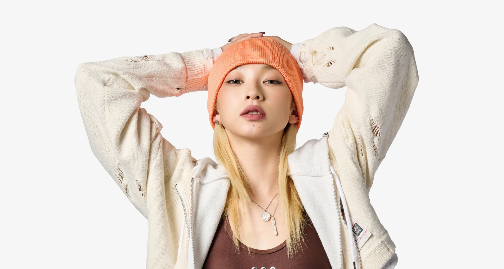
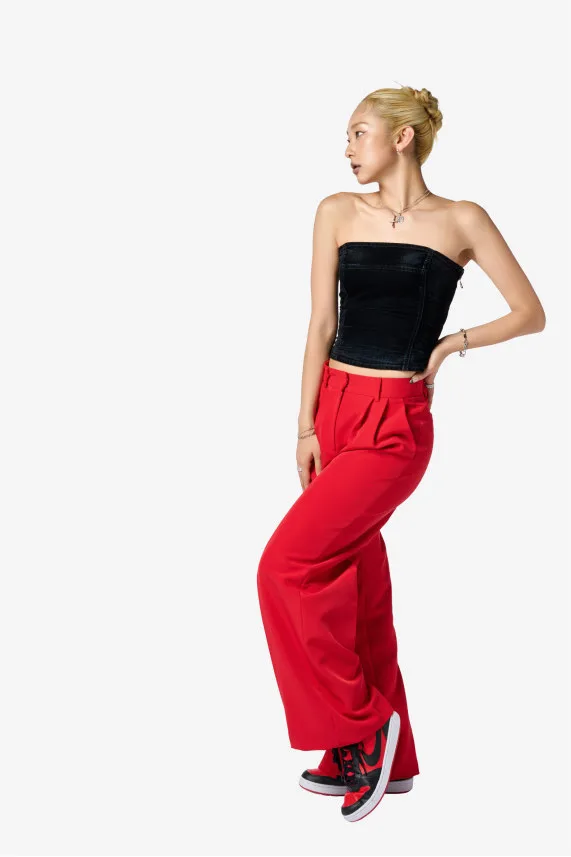
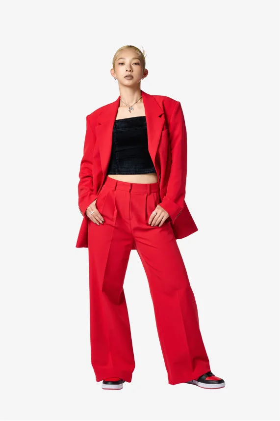
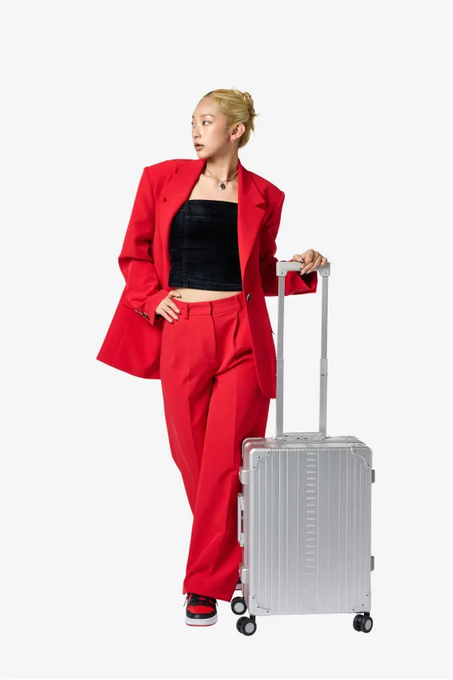
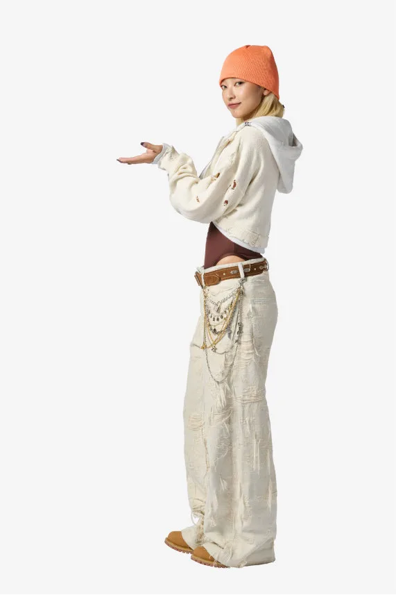
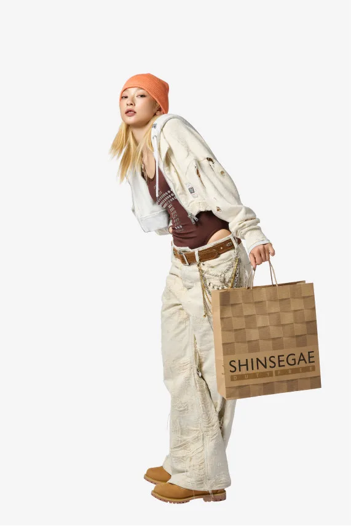
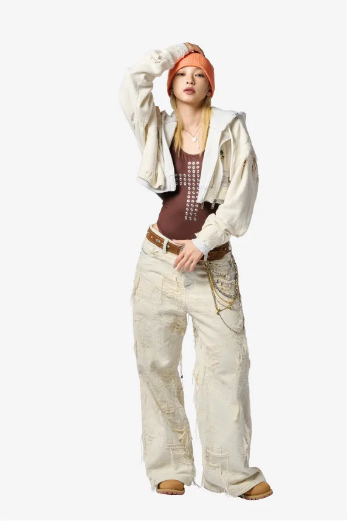